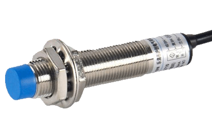
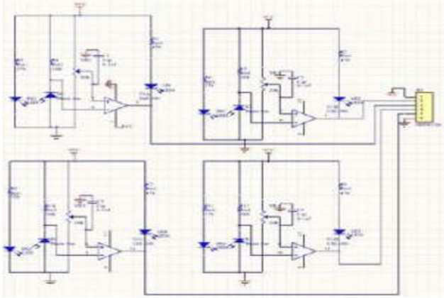
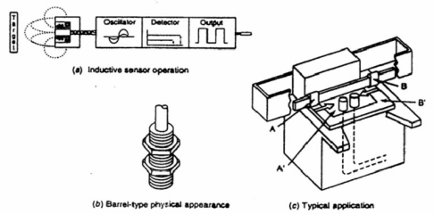
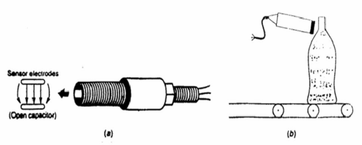
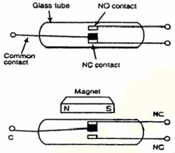
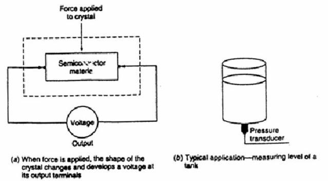
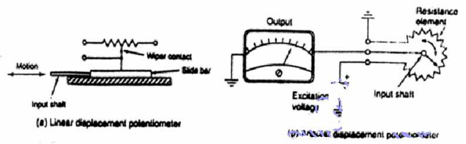
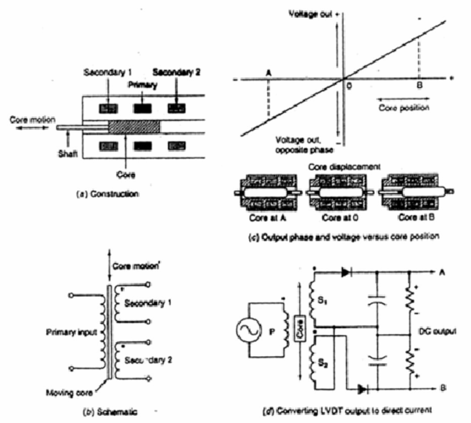

Sensor adalah piranti yang mentransformasikan (mengubah) suatu nilai (isyarat/energi) fisik ke nilai fisik yang lain serta menghubungkan antara fisik nyata dan industri listrik dan piranti elektronika. Dalam dunia industri berguna untuk monitoring, controlling, dan proteksi. Sering disebut juga dengan transducer. Sensor umumnya dikategorikan menurut apa yang diukur dan sangat berperan penting dalam proses pengendali manufaktur modern. Ada 6 tipe isyarat Sensor :
Sensor mengkonversi dari suatu isyarat input ke suatu isyarat ouput. Sensor bisa saja menggunakan satu atau lebih pengkonversian untuk menghasilkan suatu isyarat keluaran.
Sensor cahaya adalah alat yang digunakan untuk merubah besaran cahaya menjadi besaran listrik. Prinsip kerja dari alat ini adalah mengubah energi dari foton menjadi elektron. Idealnya satu foton dapat membangkitkan satu elektron. Sensor cahaya sangat luas penggunaannya, salah satu yang paling populer adalah kamera digital. Pada saat ini sudah ada alat yang digunakan untuk mengukur cahaya yang mempunyai 1 buah photon saja.
Sensor Suhu adalah alat yang digunakan untuk merubah besaran panas menjadi besaranlistrik yang dapat dengan mudah dianalisis besarnya. Ada beberapa metode yang digunakan untuk membuat sensor ini, salah satunya dengan cara menggunakan material yang berubah hambatannya terhadap arus listrik sesuai dengan suhunya. Menggunakan bahan logamLogam akan bertambah besa hambatannya terhadap arus listrik jika panasnya bertambah. Hal ini dapat dijelaskan dari sisi komponen penyusun logam. Logam dapat dikatakan sebagai muatan positif yang berada di dalam elektron yang bergerak bebas. Jika suhu bertambah, elektron-elektron tersebut akan bergetar dan getarannya semakin besar seiring dengan naiknya suhu. Dengan besarnya getaran tersebut, maka gerakan elektron akan terhambat dan menyebabkan nilai hambatan dari logam tersebut bertambah Menggunakan bahan semikonduktor Bahan semikonduktor mempunyai sifat terbalik dar i logam, semakin besar suhu, nilai hambatan akan semakin turun. Hal ini dikarenakan pada suhu yang semakin tinggi, elektron dari semikonduktor akan berpindah ke tingkat yang paling atas dan dapat bergerakdengan bebas. Seiring dengan kenaikan suhu, semakin banyak elektron dari semikonduktor tersebut yang bergerak bebas, sehingga nilai hambatan tersebut berkurang Untuk mendapatkan sinyal listrik yang baik dengan sedikit kegaduhan, dapat digunakan jembatan Wheatstone dan rangkaian Lock in Amplifier.
Merupakan sensor yang mendeteksi keberadaan dari suatu objek tanpa melakukan kontak fisik. Sensor proximity adalah sensor untuk mendeteksi ada atau tidaknya suatu obyek. Dalam dunia robotika, sensor proximity seringkali digunakan untuk mendeteksi ada atau tidaknya suatu garis pembimbing gerak robot atau lebih dikenal dengan istilah Line Follower Robot atau Line Tracer Robot, juga biasa digunakan untuk mendeteksi penghalang berupa dinding atau penghalang lain pada Robot A voider. Jenis sensor proximity meliputi limit switch (saklar mekanik), ultrasonic proximity, proximity (infra merah), kamera dan lain sebagainya.
|  |
 |
| Gambar 1 Sensor proximity |
Gambar 2 Inductive Proximity Sensor |
|  |
 |
| Gambar 3 Capacitive Proximity Sensor |
Gambar 4 Magnetic switch |
Strain Wire Gauge Transducer akan mengkonversi tegangan mekanik menja signal elektrik.
- Prinsip yang diterapkan adalah mengikuti prinsip bahwa konduktor akan memiliki resistansi yang berbeda pada sisi panjang ataupun mendatarnya.
- Gaya yang dikenakan pada bidang ukur akan menyebabkan bidan membengkok, bengkokan ini akan mendistorsi ukuran bidang, dan akterjadi perubahan resistansi.
- Perubahan resistansi ini akan disinyalir oleh sirkit yang ada. Strain Gauge Load Cells biasanya terbuat dari baja dan bidang ukur tegangan yang sensitif.
- Semiconductor strain gauge. Menggunakan piezoelectric crystal sebagai elemen pengindraannya. Jika kristal diberi gaya, maka bentuk kristal akan berubah dan menghasilkan tegangan pada terminal keluaran dar i kristal, jenis strain gauge ini memiliki sensitivitas yang lebih tinggi dibandingkan dengan strain wire gauge

Gambar 5 Semikonductor strain gate
Displacement Tranducers yang paling umum dipakai industri adalah LVDT (Linear Variable Differential Transformer). LVDT ini digunakan untuk mengendalikan level air di dalam tangki.
|  |
 |
| Gambar 6 Displacement Transduser menggunakan potensiometer |
Gambar 7 Sensor LVDT |
Sensor ini dikenal dengan nama Tachometer. Tachometer biasanya merupakan magnet permanen DC generator kecil. Jika generator berotasi, akan menghasilkan tegangan DC yang proporsional langsung terhadap kecepatan. Tachometer seringkali dipasang ke motor untuk mengindikasikan putaran sebagai masukan pengendali (Controller). Dewasa ini dikembangkan pengukur kecepatan sistem digital menggunakan piringan bercelah yang disambung para poros motor. Putaran celah yang disensor menggunakan sensor cahaya akan menghasilkan pulsa yang dapat diproses lebih lanjut oleh pengolah digital.